WINDOWS 7 透過 MicroUSB 與 Botnana A2 連線時需先安裝 RNDIS 驅動程式
1. 32 位元與 64 位元
都是用同一個安裝流程。
2. 首先，先下載 mapacode_botnana_a2.inf
按此連結下載 mapacode_botnana_a2.inf
此設定檔是由 MicroSoft Remote NDIS INF Template 修改而成。
3. 將電腦 Botnana A2 的 MicroUSB 埠與電腦的 USB 埠使用 USB 線材連結。
到 Windows 裝置管理員 （Device Manager）畫面，應可以看到 Botnana-A2 裝置出現。
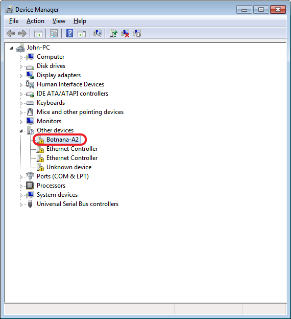
4. 選擇 Botnana-A2 裝置更新驅動程式
點選 Botnana-A2 裝置，按下滑鼠右鍵，進行驅動程式更新。
5. 瀏覽電腦上的驅動程式軟體
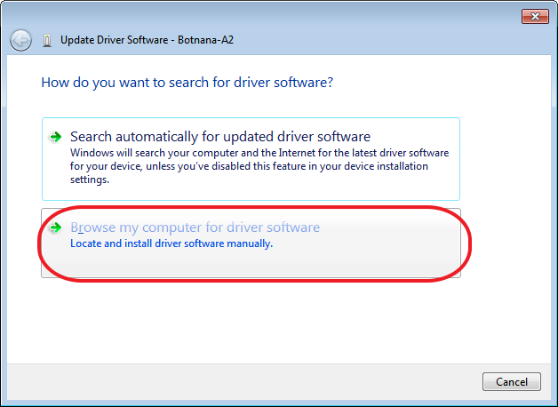
6. 讓我從電腦上的裝置驅動程式清單中挑選
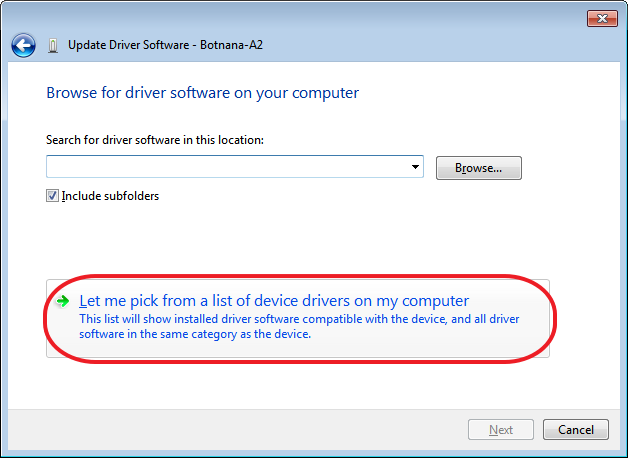
7. 請從下列清單中選取你裝置的類型，選擇[網路介面卡]
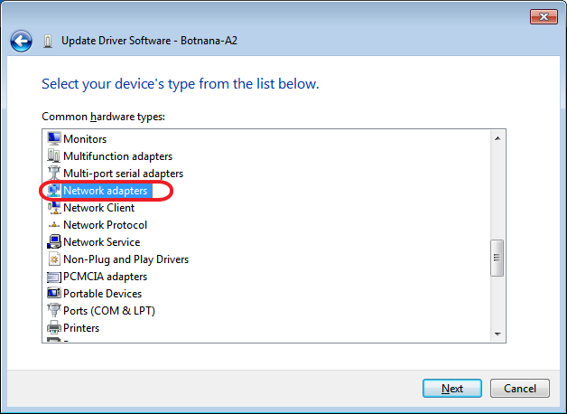
8. 選擇從磁片安裝
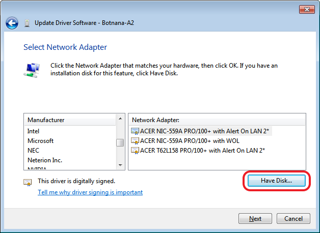
9. 選擇 mapacode_botnana_a2.inf 所在的目錄位置
此範例的 mapacode_botnana_a2.inf 的目錄位置是 D:\rndis
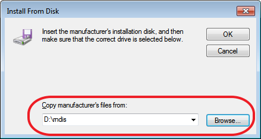
10. 此時相容的網路介面卡會出現 [Botnana-A2]
按下 [Next]，繼續安裝。
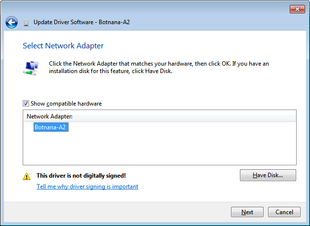
11. 選擇 [仍然安裝此驅動程式軟體]
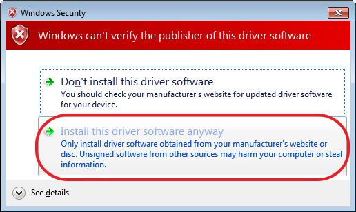
12. 等候安裝完成
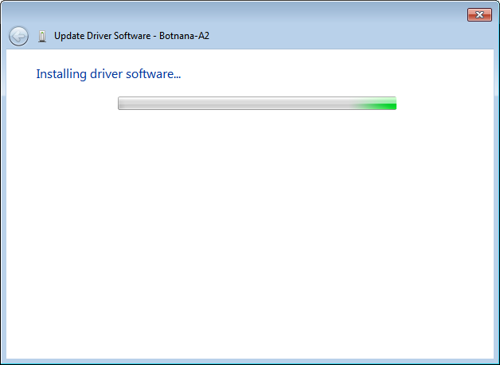
13. 安裝完成
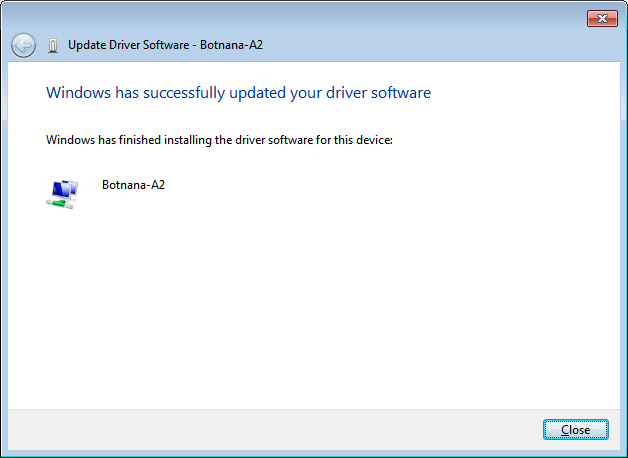
14. 可以由以下步驟確認 Botnana-A2 的裝置狀態
14.1. 網路介面卡裝置出現 [Botnana-a2]
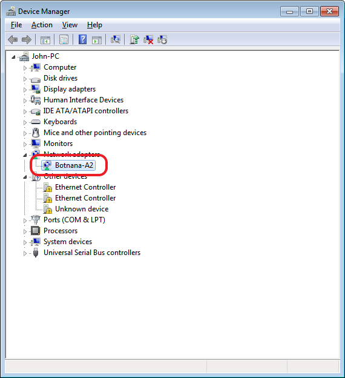
14.2 在[控制台]->[網路與網際網路]->[網路和共用中心]會出現 Botnana-A2 的網路裝置
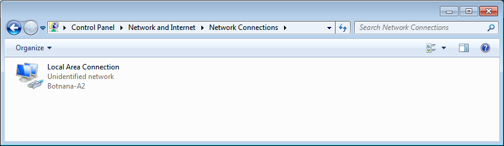
14.3. 查看 Botnana-A2 的裝置狀態
使用滑鼠游標移至 Botnana-A2 網路裝置，按下滑鼠右鍵，選擇[狀態]，就會出現以下視窗。
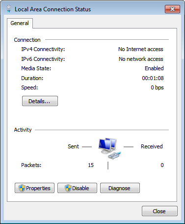
14.4. 查看 Botnana-A2 的詳細資料
以此範例可以看到本機的IP 是 192.168.7.1。而 DHCP Server IP 是 192.168.7.2，此 DHCP Server IP 就是 Botnana-A2 的 IP。
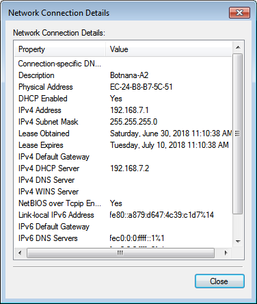